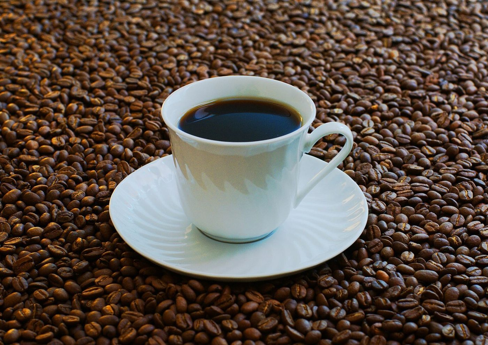
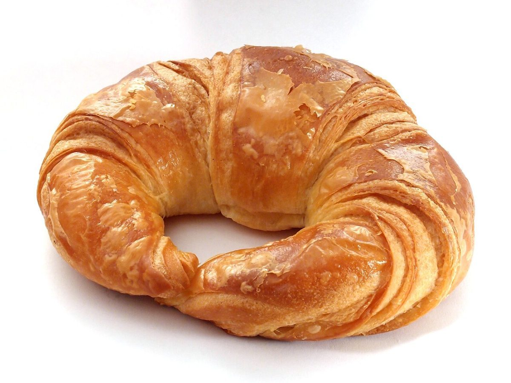
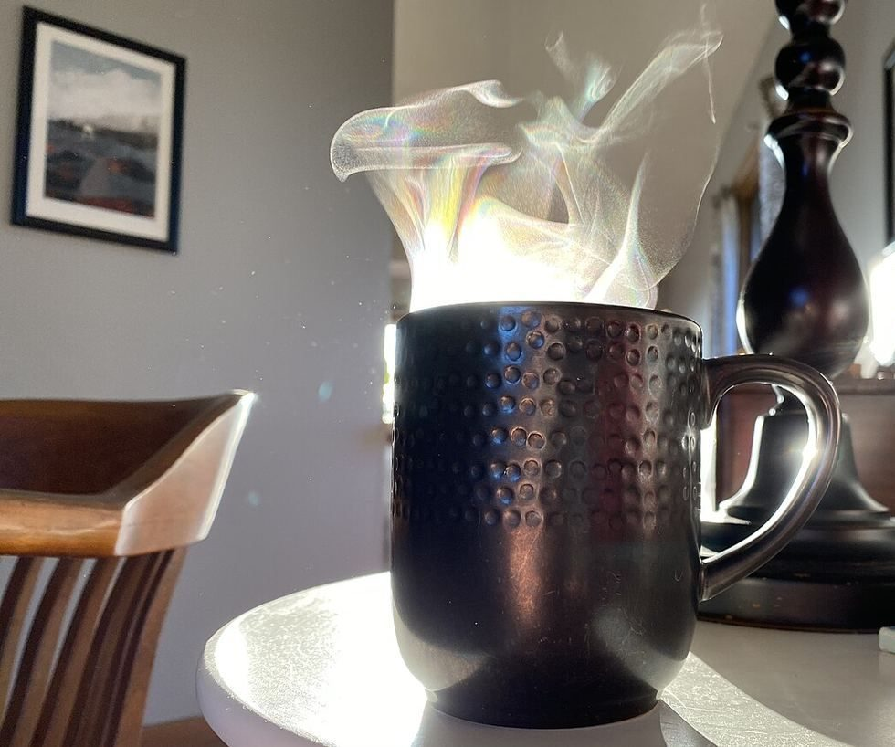
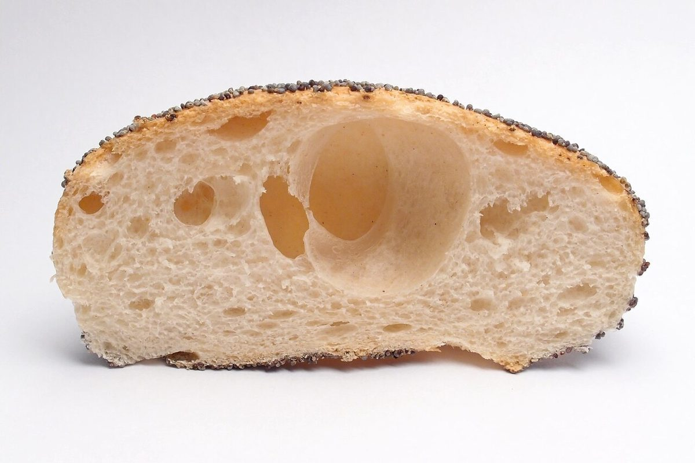
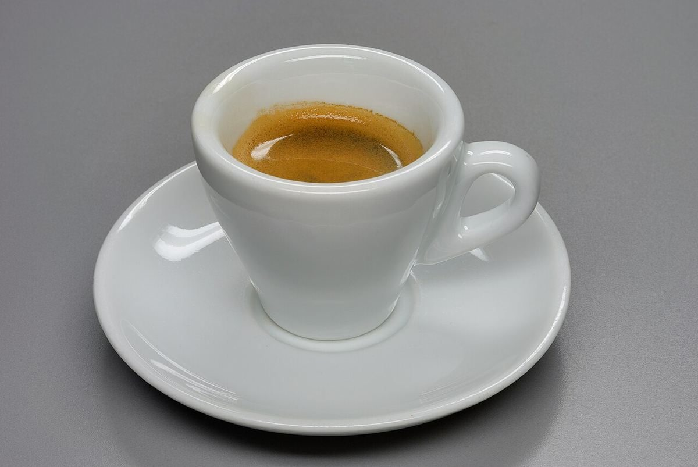
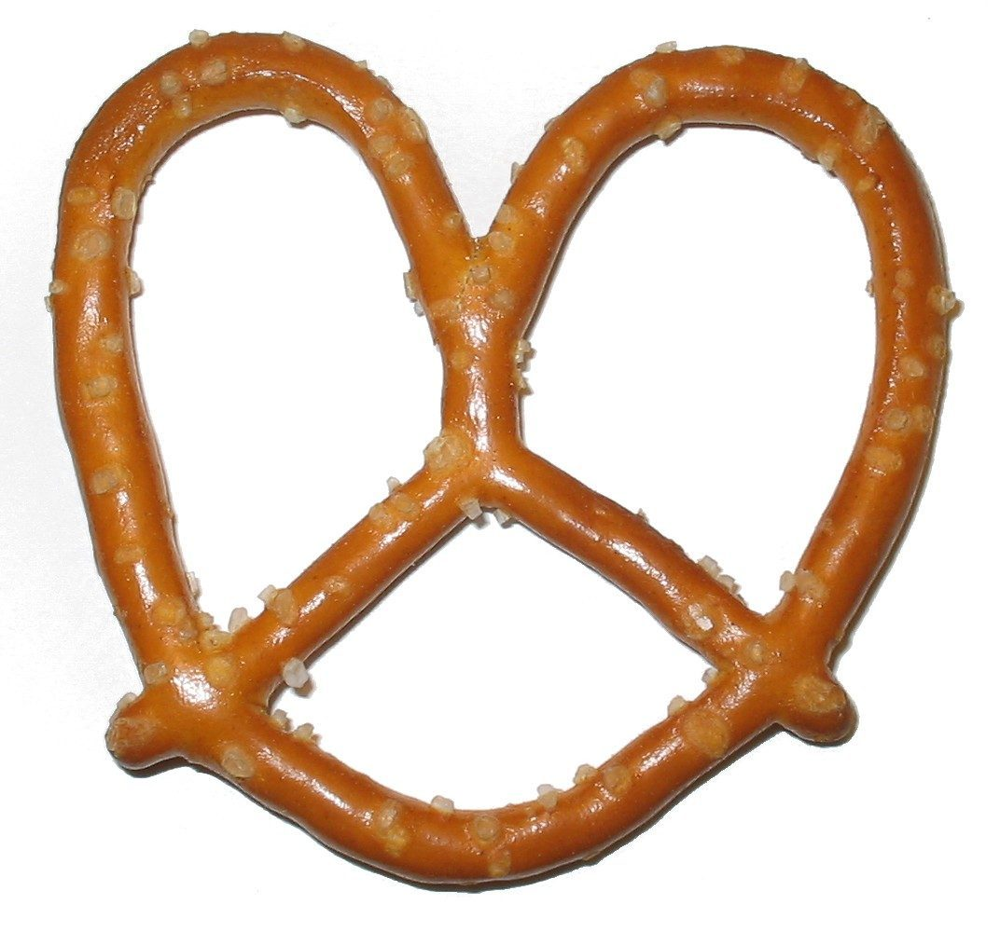
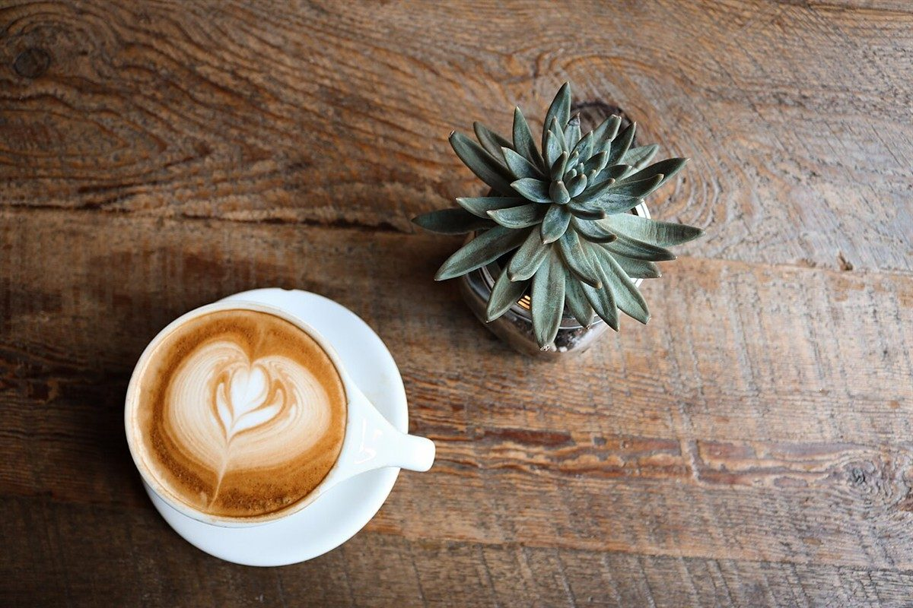
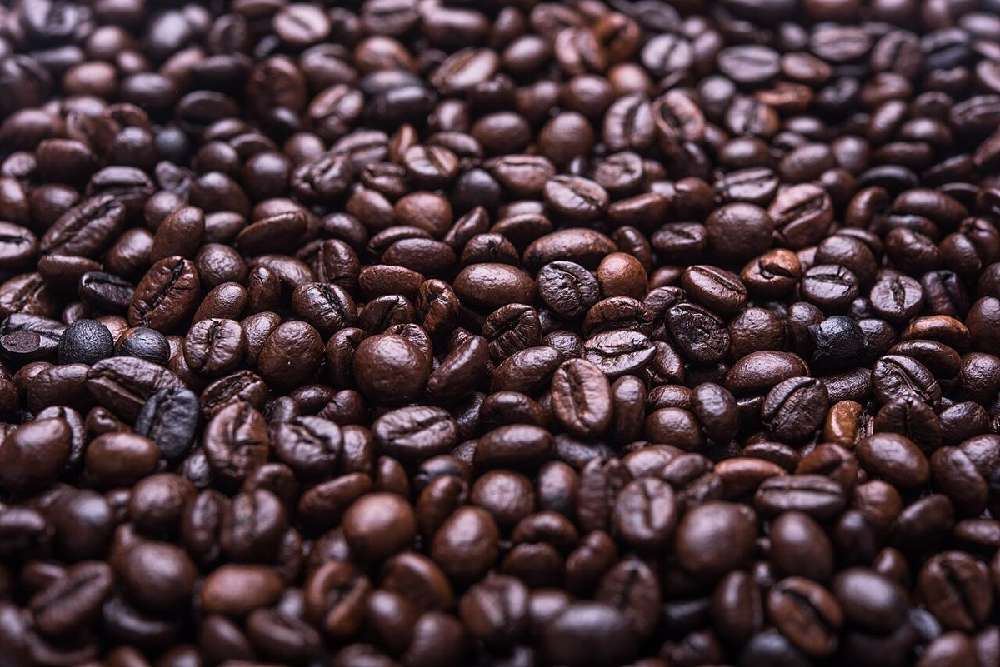

制作側の連想
液体充填機の部位を、配置図にしてみる
このサイトは、ボトルに液体を一定量ずつ詰める機械・液体充填機を図にしたつもりで作りました。六つの部位に番号をふり、上の図と並べています。制作側の連想で、お店の理念・由来とは無関係です。実際の機械の仕様を示すものではありません。
凡例
六つの部位
- 1タンク詰める液体をためておく、いちばん上の容器。
- 2充填ノズルボトルの口へ、液体を注ぎ入れる細い先端。
- 3定量ポンプ一本ぶんの量を、決めたとおりに送り出す部分。
- 4ボトル送りスターホイール星形の切り欠きでボトルを受け、次の位置へ回し送る円盤。
- 5キャッパー液体を入れたボトルに、ふたを押さえて閉める部分。
- 6排出コンベアふたまで閉じたボトルを、機械の外へ運び出す帯。
写真(イメージ)
カップとパンの写真




写真はイメージです。お店のものではありません。
ご案内
お店のこと(確認できたものだけ)
| 所在地 | 〒765-0032 香川県善通寺市原田町890-1 |
|---|---|
| 電話 | 準備中 |
| 営業時間 | 準備中 |
| 定休日 | 準備中 |
| ご予約 | 準備中 |
| 駐車場 | 準備中 |
| SNS | Instagram @haruharufarm |